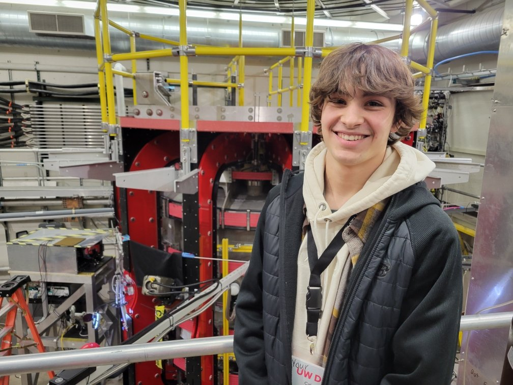

Caleb Jatczak

About me
B.S. Nuclear Engineering (Fusion Plasmas Focus Area), University of Wisconsin–Madison, expected December 2028. Certificates in progress: Physics and Nuclear Engineering Materials.

B.S. Nuclear Engineering (Fusion Plasmas Focus Area), University of Wisconsin–Madison, expected December 2028. Certificates in progress: Physics and Nuclear Engineering Materials.